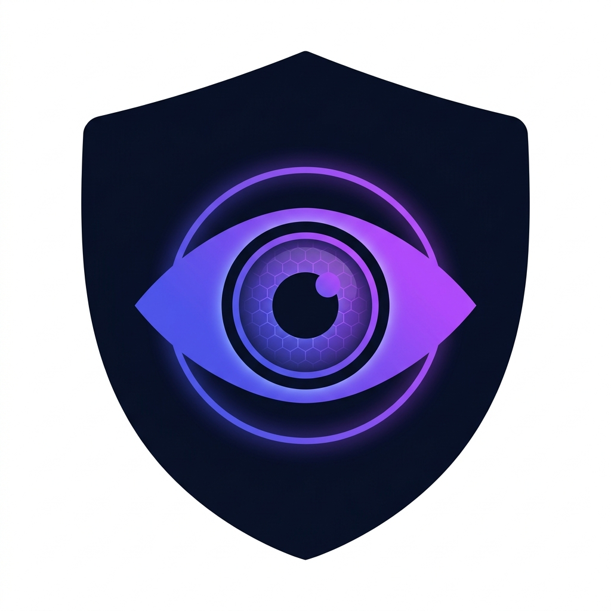

Trust
Lens
AI Deepfake Detector
⚙ Configure Endpoints
ML Service URL
Your Flask ML service address
Website URL
Your TrustLens web app address
Save
Cancel
🚀 Deployed?
Set ML URL to your Render URL and Website URL to your Vercel URL.
📸 Capturing screenshot…
Collecting evidence from current page
Analyzing…
Running multi-signal AI detection…
Confidence Score
—
Signal Details
▾
🔄 Scan Again
📋 View History
⚠️
Cannot Reach ML Service
Make sure the TrustLens ML service is running on port 5001.
🔄 Retry
⚙️ Check Settings